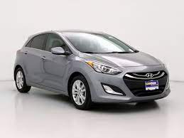
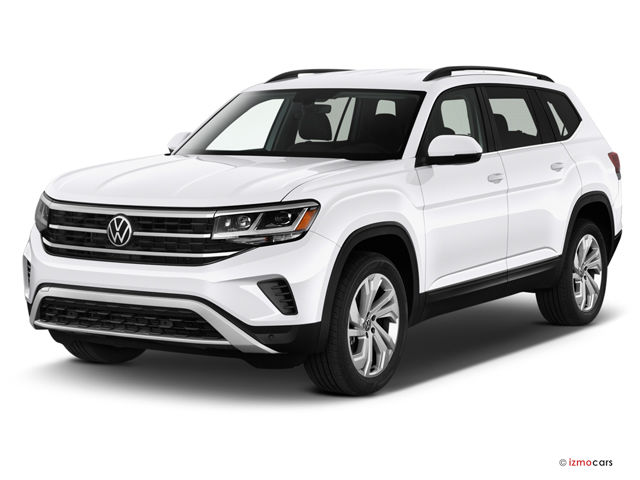

Hyundai Accent
The Kia Rio represents cheap, simple transportation at its best.
Fuel efficient and inexpensive but with a surprising amount of driving
sophistication and features for the price,
this subcompact provides good value for the money.

Honda Civic Si
The 2022 Honda Civic Si is arguably the sweet spot in the brand's small-car line,
with a near-perfect ratio of performance and daily-driver traits.
We even named it to our Editors' Choice list.

Hyundai Elantra N
Hyundai is expanding its N performance sub-brand with
fire-breathing version of its new Elantra compact car. The 2022 Elantra N is
powered by a 286-hp version of
the turbocharged 2.0-liter four-cylinder from the spunky Veloster N hatchback.
Mazda 3
For buyers with champagne taste but only a sparkling-cider budget,
the 2022 Mazda 3 delivers a premium package at a normal compact-car price.
It's offered both as a sedan and a hatchback
and can be equipped with optional all-wheel drive, a punchy turbo engine.

Volkswagen Jetta GLI
The 2022 Volkswagen Jetta GLI is about as satisfying as moderately priced sports
sedans get. Volkswagen's recipe is simple and well-executed. Spawned from the
regular Jetta (reviewed separately),
the high-performance variant enjoys the same spacious interior
Honda Accord
Although SUVs and crossovers are the people haulers these days, we think those
folks are missing out by not considering the superb 2022
Honda Accord sedan. The Accord can do most things your average compact crossover can do.